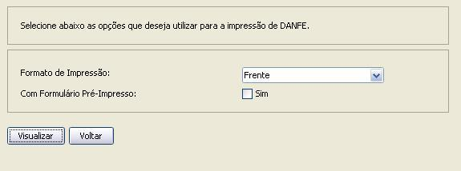
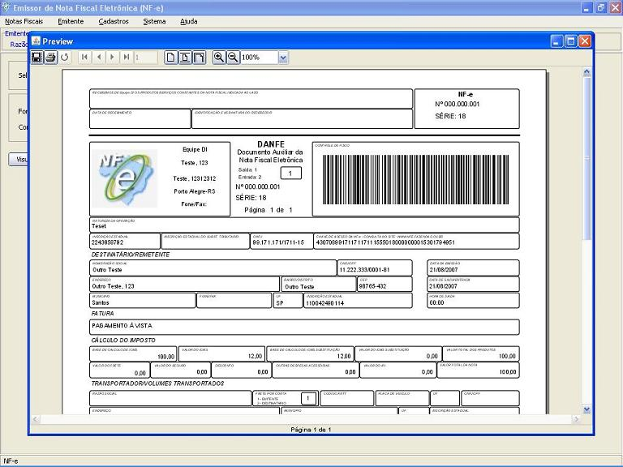

Software Emissor NF-e
Imprimindo o DANF-e
Após a
autorização de uma NF-e, deverá ser
impresso o DANF-e (Documento Auxiliar da Nota Fiscal
eletrônica) para realizar a circulação
da mercadoria.
O DANF-e poderá ser impresso a partir de dois casos:
- A partir de uma NF-e do tipo
"Normal" e com situação igual a "Autorizada"
- A partir de uma NF-e do tipo
"Contingência" com situação igual a
"Assinada" ou "Autorizada"
Lembrando que um DANF-e a ser impresso a
partir de uma NF-e em Contingência SEMPRE
precisará ser realizado em Formulário de
Segurança.
Pré-condição:
-Um emitente
deverá estar previamente iniciado.
-Deve(m) ser selecionado(s) NF-e('s) do
tipo "Normal" em
situação igual a "Autorizada" ou do tipo "Contingência" em
situação igual a "Assinada" ou "Autorizada"
Existem duas formas para
a realização da impressão do DANF-e:
1 ) Pela tela de
Detalhamento/Edição da NF-e:
- Na tela de
detalhamento/edição de NF-e, acessar a
opção Imprimir
DANFE
- Na tela de
seleção das opções de
DANF-e, preencher conforme o desejado:
- Formato de Impressão:
"Frente" ou "Frente e Verso" - Opção
para gerar o modelo para impressão apenas utilizando a
frente do papel ou gerar o modelo para impressão utilizando
a frente e o verso do papel (IMPORTANTE: o Software Emissor gera APENAS
o modelo a ser impresso. A impressão frente ou frente e
verso é de responsabilidade do usuário,
configurando ou acertando corretamente o papel e a impressora).
- Com Formulário
Pré-Impresso - Caso esteja selecionado com a
opção "Sim", o Software gerará um
modelo a ser impresso apenas com os dados da NF-e, sendo que o
usuário tem a responsabilidade de acertar o papel
já com o modelo de DANF-e a ser utiilzado.

- Após a
seleção, clicar em Visualizar.
- O
software Emissor NF-e irá gerar o modelo de DANF-e conforme
os dados da NF-e e a seleção das
opções de DANF-e. O modelo também
poderá ser salvo em formato PDF.
- O Software marcará
que o DANFE da NF-e foi impresso.

2 ) Pela tela de
Gerenciamento de NF-e's:
- Acessar o menu: Notas Fiscais -> Gerenciar
Notas
- Realizar a
pesquisa pela(s) nota(s) do
tipo "Normal" em
situação igual a "Autorizada" ou do tipo "Contingência" em
situação igual a "Assinada" ou "Autorizada"
- Selecionar a(s)
nota(s) a ser(em) assinada(s) e clicar em Imprimir DANFE
- Após a
seleção das opções de DANF-e, clicar em Visualizar
- O
software Emissor NF-e irá gerar o modelo de DANF-e conforme
os dados da(s) NF-e('s) e a seleção das
opções de DANF-e. O modelo também
poderá ser salvo em formato PDF.
- O Software marcará
que o DANFE da(s) NF-e('s) foi(ram) impresso(s).